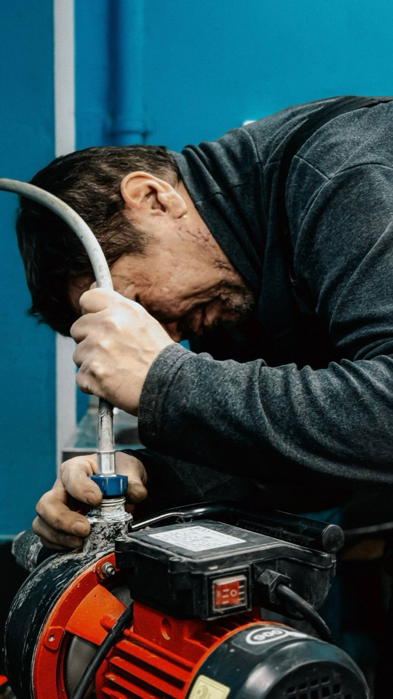

Recherche de fuite non destructive
Caméra thermique, gaz traceur, corrélation acoustique : la méthode adaptée à chaque situation.
Une fuite quelque part, mais impossible de la voir ? On la trouve sans casser vos murs.
Caméra thermique, gaz traceur, écoute acoustique : nous localisons les fuites cachées au centimètre près, puis nous réparons. Vous recevez un rapport technique à transmettre à votre assurance.
Intervention sous 48 h, en urgence si l'eau coule encore.

Cliquez sur votre situation : le formulaire se remplit tout seul.
Nos interventions
Caméra thermique, gaz traceur, corrélation acoustique : la méthode adaptée à chaque situation.
Une ouverture limitée à l'endroit exact de la fuite, puis réparation et rebouchage.
Photos, relevés et localisation : le document que demandent les assureurs et les experts.
Test du bassin, des skimmers, des refoulements et des canalisations enterrées.
Une vanne motorisée coupe l'eau automatiquement en cas de fuite, alerte sur votre téléphone.
Remplacement de canalisations, robinetterie, chauffe-eau, dépannage.
Comment ça se passe
Facture, tache, pression qui baisse : chaque indice nous oriente.
Le technicien choisit la méthode adaptée et localise la fuite.
Ouverture minimale, réparation, rebouchage. Tout est chiffré avant.
Le rapport technique vous parvient sous 48 h pour votre assurance.
Chantiers récents
Montpellier · Appartement
Lattes · Villa
Castelnau-le-Lez · Maison
Nos engagements
Yanis Roussel, gérant, technicien détection de fuites
« Trois plombiers avant eux voulaient casser la salle de bains. NEXA a trouvé la fuite en deux heures, sans rien démolir. »
« Le rapport a été accepté tel quel par mon assurance. Le coupe-eau connecté m'a déjà évité un deuxième sinistre. »
Questions fréquentes
Votre question n'est pas là ?
Appelez-nous au 04 65 71 64 12.
Souvent oui, lorsqu'elle est liée à un dégât des eaux. Les conditions dépendent de votre contrat : notre rapport vous aide à constituer le dossier.
Selon le cas : caméra thermique pour les écarts de température, gaz traceur injecté dans la canalisation, ou écoute acoustique du bruit de la fuite.
En général de une à trois heures. Le rapport vous est envoyé sous 48 h.
Fermez tous les robinets et relevez le compteur, puis relevez-le à nouveau une heure plus tard. S'il a tourné, il y a probablement une fuite.
Des capteurs détectent l'eau au sol et une vanne motorisée coupe l'arrivée générale automatiquement, avec une alerte sur votre téléphone.
Oui, dans la foulée si c'est possible, avec un prix annoncé avant de commencer.
Devis gratuit
Plus vous nous en dites, plus la recherche sera rapide. On vous rappelle avec un créneau et le tarif.
Du lundi au vendredi, 8 h à 19 h
30 rue du Pont Juvénal, 34000 Montpellier
Nous intervenons à Montpellier, Castelnau-le-Lez, Lattes, Pérols, Juvignac, Saint-Jean-de-Védas, Mauguio, Grabels, Palavas-les-Flots.